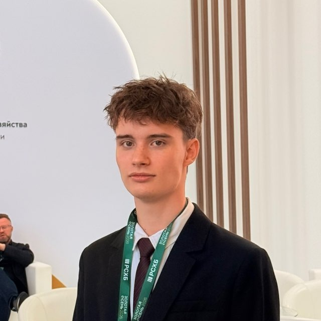

Основатель «Моё зерно»
С сентября 2026 года строю облачную платформу для зернохранилищ: термометрия, учёт в 1С и отчётность в ФГИС «Зерно» в одном окне.
Вячеслав Кокшаров · 19 лет · DevOps · стартапы
DevOps-инженер, основатель агротех-стартапа «Моё зерно» и студент Тимирязевки. Приехал в Москву из маленького города и всё строю сам.
1 — Обо мне
Приехал в Москву из маленького города и развиваюсь сам, без чьей-либо помощи: учёба, работа и стартапы — своими руками.

С сентября 2026 года строю облачную платформу для зернохранилищ: термометрия, учёт в 1С и отчётность в ФГИС «Зерно» в одном окне.
То, в чём я действительно разбираюсь: серверы, CI/CD, контейнеры, безопасность, бэкапы. Работал в том числе в крупной компании. Следующая ступень — MLOps.
«Моё зерно» и проект на компьютерном зрении для мониторинга. Go, React, MQTT, Docker.
2 курс РГАУ-МСХА имени К. А. Тимирязева, «Информационные системы и технологии».
Веду Instagram и Telegram-блог о пути молодого фаундера. Честно: публичность пугает, и я учусь с этим справляться.
2 — Главный проект
Урожай в России — около 142 млн тонн, а при доработке и хранении теряется до 5–7 % в год. Большая часть потерь — от самосогревания, которое замечают слишком поздно.
Платформа · подписка
Подключается к термометрии, которая уже стоит в хранилище, и к 1С.
Без регистрации: обзор хранилищ, карта, аналитика, календарь приёмки.
3 — Как я расту
Технические навыки — половина дела. Вторую половину — людей, продажи и публичность — качаю специально.
Хожу на выставки, форумы и питч-сессии: ЮГАГРО, «Золотая осень», РСХБ, конференция ВШЭ. Учусь знакомиться и разговаривать с рынком вживую.
Пошёл работать в маркетинг, чтобы прокачать продажи и научиться говорить с клиентом на его языке.
Разрабатываю систему мониторинга на компьютерном зрении. Подробности — позже.
Двигаюсь от классической инфраструктуры к MLOps: как доставлять модели в продакшен и держать их в рабочем состоянии.
Тяну информацию отовсюду: конференции, разговоры с предпринимателями, жёсткий фидбэк экспертов. Неудобная обратная связь — самая полезная.
Пишу утилиты под себя: трекер времени в коде, Ansible-роли для серверов, Telegram-бот с грантами.
4 — Путь · сентябрь — декабрь 2026
Пишу честно: подача заявки — ещё не победа, поэтому у каждого шага свой статус.
Серверная часть на Go, веб-кабинет на React, приём показаний датчиков по MQTT, интеграция с 1С, календарь приёмки и отгрузки, аналитика, тарифы и панель администратора.
Группа в GitLab, код-ревью через merge request, защищённая основная ветка, резервная копия кода и 10 страниц вики для онбординга новых участников.
Личный кабинет можно открыть без регистрации и посмотреть обзор хранилищ, карту, аналитику и календарь приёмки.
Презентация на 13 слайдов по требованиям акселератора, включая идею мониторинга зерна в залоге для банка.
Эксперт из агроотрасли сказала, что таких решений много. За сутки разобрал конкурентов и сформулировал отличие: «термометрия + 1С + ФГИС «Зерно» в одном окне», на уже установленном оборудовании.
Три минуты и семь слайдов перед инвесторами и экспертами. Ушёл с контактами проверенных интеграторов и советами предпринимателей.
Заявка прошла оценку экспертов. Онлайн-встреча второго этапа уже состоялась — жду решения.
Подана через РГАУ-МСХА. Тема — цифровой комплекс для контроля самосогревания зерна при хранении.
Специально приехал из Москвы проверить продукт на живом рынке. Зерновое предприятие взяло контакты для пилота, а производители оборудования рассказали, что облачный доступ к термометрии пока есть у единиц.
Пилот — три месяца по символической цене и проверка интеграций с 1С и ФГИС «Зерно» на реальных данных.
5 — Интересы
Нажми на тему, чтобы узнать подробнее.
1 / 7
Что меня цепляет
6 — Истории
Из маленького города — в Москву. Сам
Приехал в Москву из маленького города и развиваюсь без чьей-либо помощи. Учёба, работа, стартапы — всё своими руками.
Мне сказали сменить идею. Я не сменил
Эксперт из агроотрасли посоветовала бросить проект. За сутки я разобрал конкурентов и переформулировал отличие. Через неделю — питч в РСХБ и первый этап акселератора.
1 300 км, чтобы проверить идею на рынке
Поехал из Москвы на ЮГАГРО в Краснодар, сам обходил стенды и показывал продукт. Одно зерновое предприятие взяло контакты как потенциальный пилот.
19 лет — и всерьёз меня пока не воспринимают
Ключевое слово — «пока». Для меня это не барьер, а часть пути — и то, о чём я честно рассказываю в блоге.
7 — Контакты
Ищу первые пилоты среди зернохранилищ, партнёров-производителей термометрии и наставников из агроотрасли. Пиши — отвечу.
Облачная платформа для зернохранилищ. Она подключается к уже установленной термометрии и к 1С, показывает состояние зерна в каждом силосе, предупреждает о самосогревании и готовит данные для ФГИС «Зерно».
Нет. Платформа работает поверх оборудования, которое уже стоит в хранилище. Это подписка без капитальных затрат.
Напиши мне. Пилот длится три месяца по символической цене: подключаем ваши данные и проверяем интеграции с 1С и ФГИС «Зерно» в реальной работе.
Да, демо открывается без регистрации: zerno.willmc.ru/demo.
Прототип платформы я написал и развернул сам — от сервера до интерфейса.